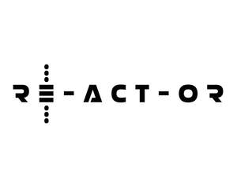

Trade Mark Journal No.2025/052 26 December 2025
UK00004302996 30 November 2025 (5,16,25,39,41)
Mark 1
Mark 2

- Class 5
- First aid kits; First aid dressings; Filled first aid kits; First aid kits for domestic use; First aid boxes sold filled; Foot care preparations for medical use; Spring water for medical purposes; Eye bandages for medical use; First-aid kits; Portable first-aid kits; Dressings, medical; Medical dressings.
- Class 16
- Journals; Blank journal books; Blank writing journals; Blank journals; Scrapbooks.
- Class 25
- Clothing; Clothes; Belts [clothing]; Waterproof clothing; Rainproof clothing; Sports clothing; Athletic clothing; Weatherproof clothing; Water-resistant clothing; Men's clothing.
- Class 39
- Rental of canoes; Arranging and conducting canoe expeditions; Arranging of expeditions; Expeditions (Arranging of -); Organisation of trips; Excursion arrangement; Organization of trips; Organization of travel tours; Arranging excursions; Arranging of excursions.
- Class 41
- Training services relating to first aid; Educational services relating to first aid; Vocational education relating to first aid; Second language educational services; Publishing of books; Publication of educational printed matter; Teaching of life saving techniques; Conducting guided walking tours; Provision of medical instruction courses; Educational instruction; Language instruction; Instruction in circuit training; Instruction in weight training; Providing online courses of instruction; Exercise instruction; Physical education instruction; Snowboard instruction; Keep-fit instruction; Medical training and teaching; Health and fitness training; Sports and fitness; Exercise and fitness classes; Exercise [fitness] training services; Fitness and exercise instruction; Fitness training services; Tuition in physical fitness; Physical fitness tuition; Personal trainer services [fitness training]; Personal fitness training services; Conducting physical fitness conditioning classes; Health and wellness training; Training in yoga; Gym activity classes; Sports training; Exercise classes; Training related to nutrition; Supervision of physical exercise; Providing of training in the field of health care and nutrition; Physical training services; Strength and conditioning training; Personal coaching [training]; Life coaching (training); Providing obstacle course training gym facilities; Personal trainer services; Health club services [health and fitness training]; Fitness club services; Physical fitness consultation; Physical fitness centres; Sports and fitness services; Physical fitness instruction; Physical fitness training services; Providing fitness and exercise facilities; Physical fitness centre services; Training or education services in the field of life coaching; Coaching; Coaching [training]; Education, teaching and training; Adventure training for children; Personal development courses; Education and training.
RE-ACT-OR Chain of survival Ltd